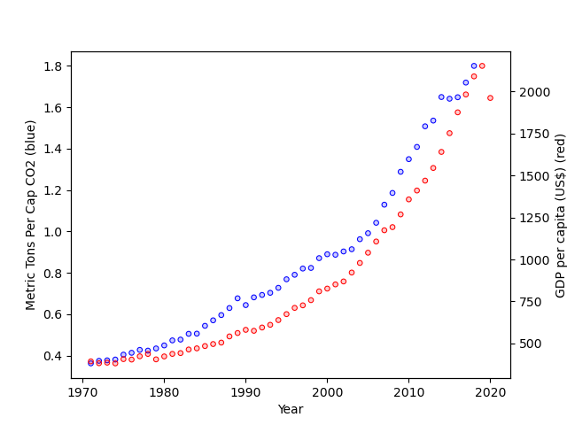

Plotting Exercises, Part 2¶
Wealth and Democracy¶
Let’s now pivot from working with example data to real data. Load the World Development Indicator data you worked with over the summer. This is country-level data that includes information on both countries’ GDP per capita (a measure of wealth) and the Polity IV scores (a measure of how democratic a country is – countries with higher scores are liberal democracies, countries with low scores are autocratic.). Use the code below to download the data.
[1]:
import pandas as pd
import numpy as np
pd.set_option("mode.copy_on_write", True)
import seaborn.objects as so
import seaborn as sns
from matplotlib import style
import warnings
warnings.simplefilter(action="ignore", category=FutureWarning)
wdi = pd.read_csv(
"https://raw.githubusercontent.com/nickeubank/"
"practicaldatascience/master/Example_Data/world-small.csv"
)
Your data should look like this:
[2]:
wdi.head()
[2]:
| country | region | gdppcap08 | polityIV | |
|---|---|---|---|---|
| 0 | Albania | C&E Europe | 7715 | 17.8 |
| 1 | Algeria | Africa | 8033 | 10.0 |
| 2 | Angola | Africa | 5899 | 8.0 |
| 3 | Argentina | S. America | 14333 | 18.0 |
| 4 | Armenia | C&E Europe | 6070 | 15.0 |
Exercise 1¶
Let’s being analyzing this data by estimating a simple linear model (“ordinary least squares”) of the relationship between GDP per capita (gdppcap08) and democracy scores (polityIV). We will do so using the statsmodel package, which we’ll discuss in detail later is this course. For the momement, just use this code:
import statsmodels.formula.api as smf
results = smf.ols('polityIV ~ gdppcap08',
data=wdi).fit()
print(results.summary())
[3]:
import statsmodels.formula.api as smf
results = smf.ols("polityIV ~ gdppcap08", data=wdi).fit()
print(results.summary())
OLS Regression Results
==============================================================================
Dep. Variable: polityIV R-squared: 0.047
Model: OLS Adj. R-squared: 0.040
Method: Least Squares F-statistic: 6.981
Date: Thu, 19 Oct 2023 Prob (F-statistic): 0.00915
Time: 11:56:10 Log-Likelihood: -475.14
No. Observations: 145 AIC: 954.3
Df Residuals: 143 BIC: 960.2
Df Model: 1
Covariance Type: nonrobust
==============================================================================
coef std err t P>|t| [0.025 0.975]
------------------------------------------------------------------------------
Intercept 12.1354 0.721 16.841 0.000 10.711 13.560
gdppcap08 9.602e-05 3.63e-05 2.642 0.009 2.42e-05 0.000
==============================================================================
Omnibus: 17.820 Durbin-Watson: 1.939
Prob(Omnibus): 0.000 Jarque-Bera (JB): 20.393
Skew: -0.887 Prob(JB): 3.73e-05
Kurtosis: 2.524 Cond. No. 2.67e+04
==============================================================================
Notes:
[1] Standard Errors assume that the covariance matrix of the errors is correctly specified.
[2] The condition number is large, 2.67e+04. This might indicate that there are
strong multicollinearity or other numerical problems.
Exercise 2¶
Based on the results of this analysis, what would you conclude about about the relationship between gdppcap08 and polityIV?
(If you aren’t familiar with Linear Models and aren’t sure how to interprete this, you can also just look at the simple correlation between these two variables using wdi[['polityIV', 'gdppcap08']].corr().)
Write down your conclusions.
[4]:
# They seem to have a positive relationship, and
# Polity scores seem to increase 1 point for every $10,000 in gdp per capita.
Exercise 3¶
Now let’s plot the relationship you just estimated statistically. First, use seaborn to create a scatter plot of polityIV and gdppcap08. Include a title and label your axes (with formatted words, not variable names).
[5]:
(
so.Plot(wdi, x="gdppcap08", y="polityIV")
.add(so.Dots())
.label(title="GDP per Capita Polity IV", x="GDP per Capita", y="Polity IV")
.theme({**style.library["seaborn-v0_8-whitegrid"]})
)
[5]:
Exercise 4¶
Now add a linear regression (not a higher order polynomial, just linear) fit to the scatter plot.
[6]:
(
so.Plot(wdi, x="gdppcap08", y="polityIV")
.add(so.Dots())
.add(so.Line(), so.PolyFit(order=1))
.label(title="GDP per Capita Polity IV")
.theme({**style.library["seaborn-v0_8-whitegrid"]})
)
[6]:

Exercise 5¶
Does it seem like the linear model you estimated fits the data well?
[7]:
# Not even close...
Exercise 6¶
Linear models impose a very strict functional form on the model they use: they try to draw a straight line through the data, no matter what.
Can you think of a transform for your data that would make the data a little more sane?
Apply the transformation.
[8]:
wdi["log_gdp"] = np.log(wdi.gdppcap08)
(
so.Plot(wdi, x="log_gdp", y="polityIV")
.add(so.Dots())
.label(title="GDP per Capita Polity IV", x="Log GDP per Capita", y="Polity IV")
.theme({**style.library["seaborn-v0_8-whitegrid"]})
)
[8]:
Exercise 7¶
Once you’ve applied that transformation, let’s re-fit our model.
Rather than imposing linearity this time, however, let’s fit a model with a flexible functional form. Using the recipe for a lowess regression you can find here, see how well a lowess regression fits your updated data. This is a form of local polynomial regression that is designed to be flexible in how it fits the data.
[9]:
from dataclasses import dataclass
from seaborn._stats.base import Stat
import statsmodels.api as sm
@dataclass
class Lowess(Stat):
"""
Fit a locally-weighted regression to smooth the data.
"""
frac: float = 0.2 # Fraction of data to use when estimating each y-value
gridsize: int = 100 # How fine-grained to plot the curve. Increase if jagged.
def _fit_predict(self, data):
x = data["x"]
xx = np.linspace(x.min(), x.max(), self.gridsize)
# https://www.statsmodels.org/devel/generated/statsmodels.nonparametric.smoothers_lowess.lowess.html
yy = sm.nonparametric.lowess(exog=x, endog=data["y"], xvals=xx, frac=self.frac)
return pd.DataFrame(dict(x=xx, y=yy))
def __call__(self, data, groupby, orient, scales):
return groupby.apply(data.dropna(subset=["x", "y"]), self._fit_predict)
(
so.Plot(wdi, x="log_gdp", y="polityIV")
.add(so.Dots())
.add(so.Line(), Lowess())
.label(title="GDP per Capita Polity IV", x="Log GDP per Capita", y="Polity IV")
.theme({**style.library["seaborn-v0_8-whitegrid"]})
)
[9]:

Exercise 8¶
This does seem to fit the data better, but there seem to be quite a few outliers in the bottom right. Who is that? Add text labels to the points on your graph with country names. Make sure the size of your text labels leaves them legible.
[10]:
(
so.Plot(wdi, x="log_gdp", y="polityIV")
.add(so.Dots())
.add(so.Line(), Lowess())
.add(so.Text(fontsize=10), text="country")
.label(title="GDP per Capita Polity IV", x="Log GDP per Capita", y="Polity IV")
.theme({**style.library["seaborn-v0_8-whitegrid"]})
)
[10]:

Exercise 9¶
Interesting. It seems that there’s are a lot of rich, undemocratic countries that all have something in common: they’re oil-rich, small, Middle Eastern countries.
Let’s see what happens if we exclude the ten countries with the highest per-capita oil production from our data: Qatar, Kuwait, Equatorial Guinea, United Arab Emirates, Norway, Saudi Arabia, Libya, Oman, Gabon, and Angola. (Note this was in 2007, and excludes very small countries!)
What does the relationship between Polity and GDP per capita look like for non-natural resource producers?
[11]:
import numpy as np
wdi["bigproducer"] = wdi["country"].isin(
[
"Qatar",
"Kuwait",
"Equatorial Guinea",
"UAE",
"Norway",
"Angola",
"Saudi Arabia",
"Libya",
"Oman",
"Gabon",
]
)
(
so.Plot(wdi[~wdi.bigproducer], x="log_gdp", y="polityIV")
.add(so.Dots())
.add(so.Line(), Lowess())
.add(so.Text(fontsize=10), text="country")
.label(title="GDP per Capita Polity IV", x="Log GDP per Capita", y="Polity IV")
.theme({**style.library["seaborn-v0_8-whitegrid"]})
)
[11]:

Exercise 10¶
Let’s make sure that you accurately identified all 10 of the oil producers. Write a line of code to count up how many big producers you have identified. If you do not get 10, can you figure out what you did wrong?
[12]:
wdi["bigproducer"].sum()
[12]:
10
[13]:
wdi.loc[wdi["bigproducer"] == 1, "country"].nunique()
[13]:
10
[14]:
wdi.loc[wdi["bigproducer"] == 1, "country"].unique()
[14]:
array(['Angola', 'Equatorial Guinea', 'Gabon', 'Kuwait', 'Libya',
'Norway', 'Oman', 'Qatar', 'Saudi Arabia', 'UAE'], dtype=object)
[15]:
# many people will get 9 because used United Arab Emirates, when it's UAE in the data.
Exercise 11¶
How does the relationship between GDP per capita and Polity look for the oil producers we dropped above?
(note a Lowess line may not plot if you don’t have enough data)
[16]:
(
so.Plot(wdi[wdi.bigproducer], x="log_gdp", y="polityIV")
.add(so.Dots())
.add(so.Line(), so.PolyFit(order=1))
.add(so.Text(fontsize=10), text="country")
.label(title="GDP per Capita Polity IV", x="Log GDP per Capita", y="Polity IV")
.theme({**style.library["seaborn-v0_8-whitegrid"]})
)
[16]:

[17]:
# Not even remotely similar. Aside from the super-outlier (Norway), the trend is downward!
Exercise 12¶
Look back to your answer for Exercise 2. Do you still believe the result of your linear model? What did you learn from plotting. Write down your answers with your partner.
Exercise 13¶
Finally, let’s make a plot that color codes countries by whether they are big oil producers. Include separate linear regression fits for both groups.
[18]:
(
so.Plot(wdi, x="log_gdp", y="polityIV", color="bigproducer")
.add(so.Dots())
.add(so.Line(), so.PolyFit(order=1))
.add(so.Text(fontsize=10), text="country")
.label(
title="GDP per Capita Polity IV",
x="Log GDP per Capita",
y="Polity IV",
color="Big Oil Producer",
)
.theme({**style.library["seaborn-v0_8-whitegrid"]})
)
[18]:

Take-aways¶
One of our main jobs as data scientists is to summarize data. In fact, its such an obvious part of our jobs we often don’t think about it very much. In reality, however, this is one of the most difficult things we do.
Summarization means taking rich, complex data and trying to tell readers about what is going on in that data using simple statistics. In the process of summarization, therefore, we must necessarily throw away much of the richness of the original data. When done well, this simplification makes data easier to understand, but only if we throw away the right data. You can always calulate the average value of a variable, or fit a linear model, but whether doing so generates a summary statistic that properly represents the essence of the data being studied depends on the data itself.
Plotting is one fo the best tools we have as data scientists for evaluating whether we are throwing away the right data. As we learned from Part 1 of this exercise, just looking at means and standard deviations can mask tremendous variation. Each of our example datasets looked the same when we examined our summary statistics, but they were all radically different when plotted.
Similarly, a simple linear model would “tell” us that if GDP per capita increases by $10,000, we would expect Polity scores to increase by about 1 (i.e. the coefficent on the linear model was 9.602e-05). But when we plot the data, not only can we that the data is definitely not linear (and so that slope doesn’t really mean anything), but we can also see that oil producing countries seem to defy the overall trend, and so should maybe be studied separately.
Moreover, we can see that if we just look at oil producers, there is no clear story: some are rich and democratic, while others are rich and autocratic (indeed, this observation is the foundation of some great research on the political consequences of resource wealth!)
So remember this: tools for summarizing data will always give you an answer, but it’s up to you as a data scientist to make sure that the summaries you pass on to other people properly represent the data you’re using. And there is perhaps no better way to do this than with plotting!
Overlaying Data Series with matplotlib¶
In our last plotting exercises, you were asked to make a paired plot in which different data series were plotted next to one another with a shared x-axis. Presumably that resulted in a figure that looked something like this:
[19]:
wdi = pd.read_csv(
"https://raw.githubusercontent.com/nickeubank/"
"practicaldatascience/master/Example_Data/wdi_plotting.csv"
)
india = wdi[wdi["Country Name"] == "India"]
india = india.rename(
columns={
"CO2 emissions (metric tons per capita)": "Metric Tons Per Cap CO2",
"GDP per capita (constant 2010 US$)": "GDP per capita (US$)",
}
)
p = (
so.Plot(
india,
x="Year",
)
.add(so.Dots())
.pair(
y=[
"Metric Tons Per Cap CO2",
"GDP per capita (US$)",
]
)
)
p
[19]:

Often times, however, it’s more interesting to directly overlay data series on the same plot to make a figure like this:
So let’s do that here!
Exercise 14¶
Making this work will require two new tricks:
using the
.twinx()method from matplotlib, andsuing the
.on()method from seaborn.objects.
How? Great question! I’m going to leave it to you to figure that out using the documentation for these methods. But here’s a start — you can find the .on() method for seaborn.objects here, and the .twinx() for matplotlib method demonstrated here
Oh, and you may note use these two variables as your two. :)
Good luck!
Also, if you want to, feel free to add any extra bells and whistles as part of your exploration (like a legend, or colored y-axis labels).
[20]:
import matplotlib.pyplot as plt
fig, ax1 = plt.subplots()
ax2 = ax1.twinx()

[21]:
series_1 = (
so.Plot(
india,
x="Year",
y="Metric Tons Per Cap CO2",
)
.add(so.Dots(color="blue"))
.label(y="Metric Tons Per Cap CO2 (blue)")
.theme({**style.library["seaborn-v0_8-whitegrid"]})
)
series_1
[21]:

[22]:
series_2 = (
so.Plot(
india,
x="Year",
y="GDP per capita (US$)",
)
.add(so.Dots(color="red"))
.label(y="GDP per capita (US$) (red)")
.theme({**style.library["seaborn-v0_8-whitegrid"]})
)
series_2
[22]:

[23]:
series_1.on(ax1).show()
series_2.on(ax2).show()
fig.savefig("images/two_series_overlayed.png")
[24]:
fig
[24]:

[ ]: